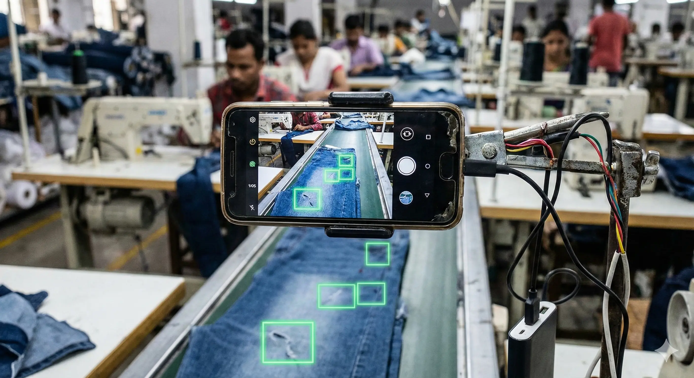
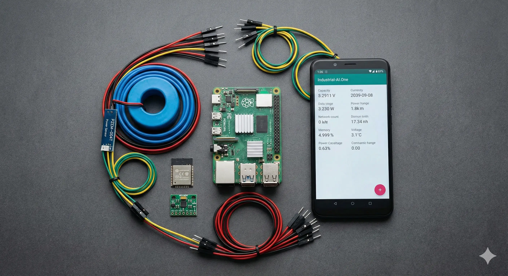
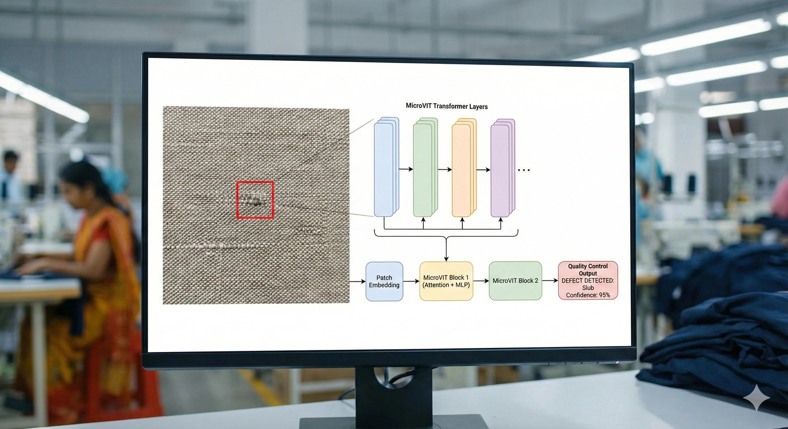

Margin
Defense.
A techno-economic response to US Tariff Volatility and EU Green Deal compliance. Retrofitting the Bangladesh RMG sector for the age of Neural Manufacturing.
The labor arbitrage era is ending.
Efficiency is the new currency.

Fig 1: Primary Industrial Corridor (Gazipur - Narayanganj - Chattogram)
The 20% Tariff Floor: With US duties stabilizing at 20% (down from the threatened 37%), the comparative advantage of cheap labor has eroded against near-shoring options like Mexico. Factories must now generate margin internally through rigorous efficiency.
The "Brownfield" Strategy: We reject the high-CAPEX model of importing $12,000 machines. We utilize a "Retrofit Innovation" approach—deploying commodity compute nodes* and recycled sensors to inject intelligence into existing legacy infrastructure.
*Single-Board Compute Node: A low-cost ($90), credit-card sized industrial computer (Raspberry Pi 5) capable of processing AI models locally without internet.
Capital Efficiency
Hardware CAPEX
$150 / Unit
Compared to $12,000 for proprietary optical inspection rigs. We utilize off-the-shelf components to lower the barrier to entry for SMEs, mitigating credit risk for lenders.
SaaS OPEX
$149 / Month
Priced within the "Petty Cash" approval limit of most General Managers, bypassing complex board approvals or loan applications.
Liquidity Velocity
47 Days
The payback period is reached in under two months based on a 1.8% reduction in defects. Year 1 ROI is projected at 9.2x.

Fig 2: "Human-in-the-Loop" Operational Workflow
Three Pillars of Profitability
-
01. QC Vision →
Computer vision for defect detection. 38% Defect Reduction.
-
02. PowerGuard →
Energy analytics & peak shaving. EU CBAM Compliant.
-
03. FailPredict →
Vibration analysis for motors. 5-Hour Warning.